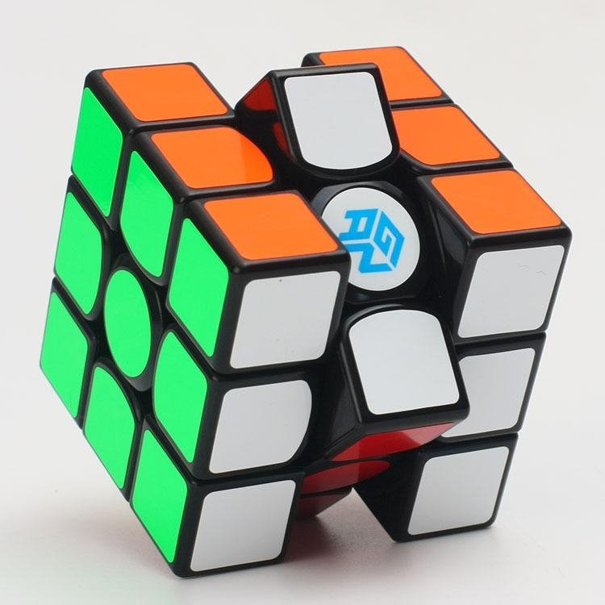

¿Que es el cubo rubik?

El Cubo de Rubik es un rompecabezas mecánico tridimensional creado por el escultor y profesor de arquitectura húngaro Ernő Rubik en 1974. Originalmente llamado «cubo mágico», el rompecabezas fue licenciado por Rubik para ser vendido por Ideal Toy Company en 1980, año en el cual ganó el premio alemán a Mejor Juego del Año en la categoría de mejor rompecabezas. Hasta enero de 2009 se vendieron 350 millones de cubos en todo el mundo, convirtiéndolo no solo en el rompecabezas más vendido, sino que es considerado, en general, el juguete más vendido del mundo.
Metodo fridrich
El método Fridrich (también conocido como el método CFOP) es uno de los métodos más populares para resolver el cubo de Rubik 3x3x3, cuya creación se atribuye a la speedcuber Checa Jessica Fridrich, quien a principios de los años ochenta lo hizo popular combinando ideas de varios speedcubers. El método Fridrich está muy extendido entre los speedcubers de todo el mundo, incluidos Rowe Hessler, Mats Valk y Feliks Zemdegs, porque se basa en gran medida en el reconocimiento de patrones, la memoria muscular y un gran número de algoritmos, en oposición a métodos más intuitivos como Roux y Petrus. La mayoría de los speedcubers en el ranking mundial de la WCA utilizan el método Fridrich. El récord mundial de resolución única del cubo 3x3x3, en poder del chino Yusheng Du con un tiempo de 3,47 segundos (logrado en el Wuhu Open 2018), se obtuvo a través del método Fridrich.
¿Como armar un cubo rubik? Clickea aca abajo ↓ para enterarte como